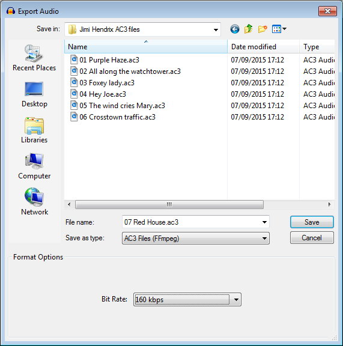

AC3 Export Options
AC3 is a compressed audio format developed by Dolby Laboratories, often used in DVD production.
- Accessed by: then choosing AC3 Files (FFmpeg) from the Save as type dropdown menu.
- 
- Also accessed by: } then choosing AC3 Files (FFmpeg) from the Save as type dropdown menu. In this case the options dialog will appear in the center of the Export Multiple dialog.
| FFmpeg is not shipped with Audacity but you can download it and then export as AC3 by following these instructions. |
AC3 Export Setup
- Bit Rate: Choose a bit rate from 32 kbps to 640 kbps (defaults to 160 kbps). Larger bit rates give higher quality but produce larger files.